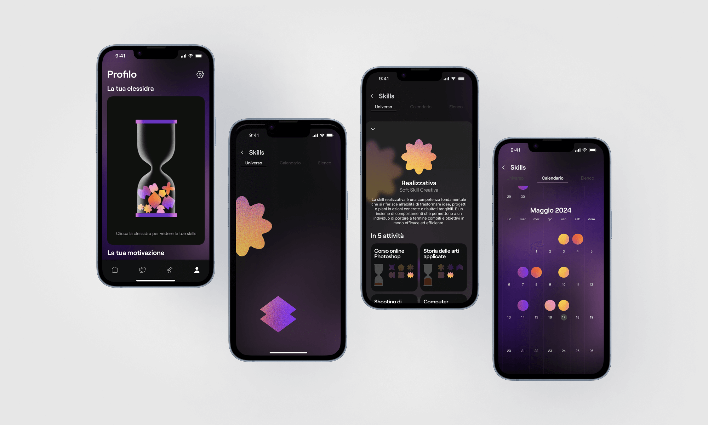
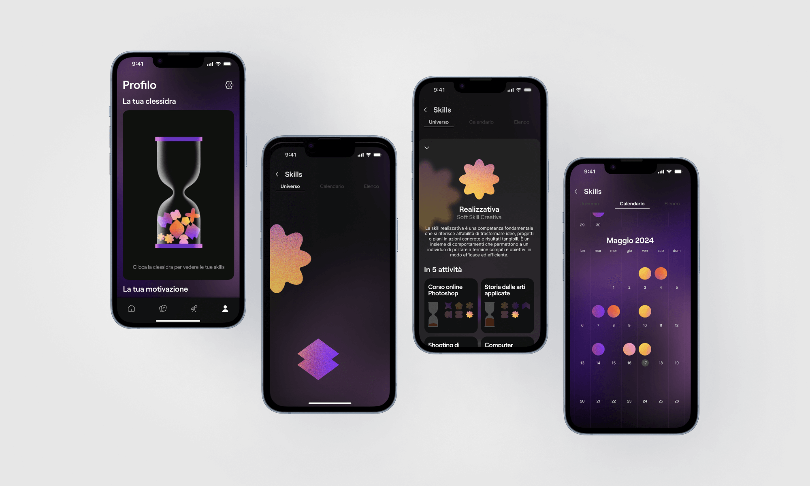

Team P. Bocchio, A. Cupisti, E. Galliani, G. Polimeno, M. Venini
Year 2023
Developed during an Interaction Design course with a focus on "togetherness" and "inspiration", U-TURN is an app designed to empower users to overcome the fear that it’s too late to start a new educational or professional journey. The hourglass was chosen as the central graphic element, symbolizing that time is not the ultimate factor in personal growth—what matters are the skills acquired and progress achieved.
U-TURN is specifically aimed at beginners embarking on new skills or activities, addressing common struggles like managing time and comparison with others. Through in-depth interviews, the app identified key user needs, offering functionality that tracks progress based on tasks completed, not hours spent, to keep motivation high. Progress is shown both quantitatively by completed activities and qualitatively through the user’s emotional state.
The app recognizes and organizes newly gained skills, inspiring users to pursue their interests by suggesting personalized content based on the data they input. U-TURN also builds a sense of community, matching users on similar or complementary paths and connecting them with beginner communities for shared learning. Additionally, AI, powered by advanced natural language models like GPT, supports users by providing writing suggestions and generating tailored content recommendations, all while adapting to each user’s unique goals and needs.


 
